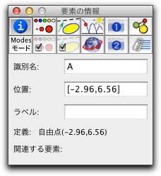
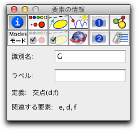

情報ブロック
最初のブロックは、要素の幾何学的定義についての情報を提供します。ここで、要素の名前、定義、インシデンス、パラメータを見ることができます。このブロックには、ボタン
 で入ることができます。
で入ることができます。自由点の情報は次のようになっています。
 |
| 自由点の情報 |
点の識別名と位置、ラベルがわかります。識別名は、シンデレラが内部的に、また、CindyScriptで点をコントロールするときに使います。ラベルは画面に表示される名前です。この欄が空欄のときは、識別名がそのまま画面に表示されます。これらの属性は、文字を入力して変えることができます。ラベルは基本的にはアルファベットですが、日本語の「ア」「イ」などにしたいときは、別にテキストエディタなどを開いて日本語を打ち、それをカットアンドペーストでコピーします。直接入力することはできません。
さらに、点の定義がわかり、次の例では、点Ｇが３本の直線 a, b, cの交点上にある(インシデント)ことがわかります。
 |
| 従属点の情報 |
自由要素の管理について特に素晴らしい事実があります。それらの位置は CindyScript の式で変えることができます。たとえば、位置を
[5,4] と指定すれば、点の位置は xy-座標 (5, 4) になります。位置を計算で指定することもできます。 式 (B+C)/2 により、点は B と C を結ぶ線分の中点に置かれます。その点は、もちろんさらに動かすことができます。モードについての情報
いくつかのモード、たとえば、 固定した角の直線 と 固定した半径の円 には、さらに追加情報があります。これらを入力するためのフィールドが、現在の要素の情報エリアの下にあります。これらのモードを選ぶと、インスペクタウィンドウが自動的に開き、パラメータを入力をうながします。
また、文字列をボタンとして機能させることなどもここで行なえます。
Page last modified on Saturday 10 of March, 2012 [06:01:08 UTC].
The original document is available at
http://doc.cinderella.de/tiki-index.php?page=Info%20BlockJ